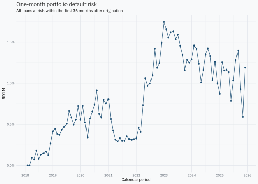
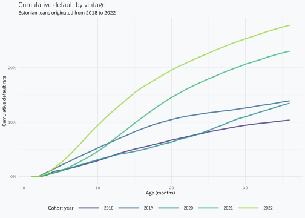
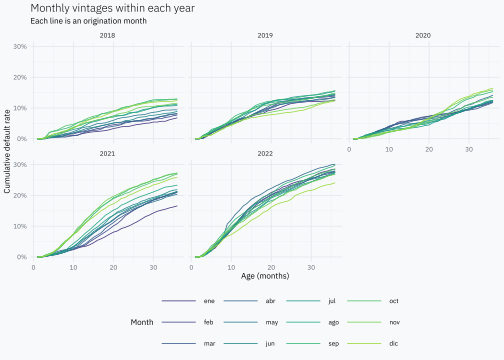
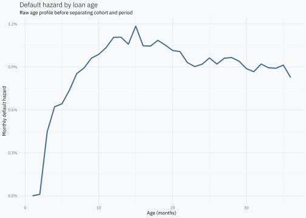
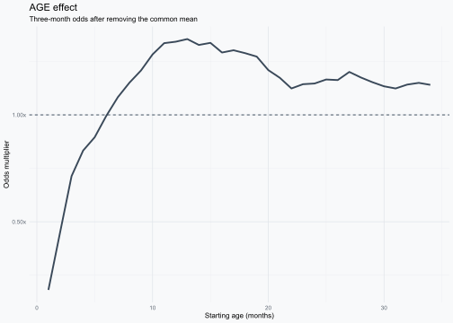
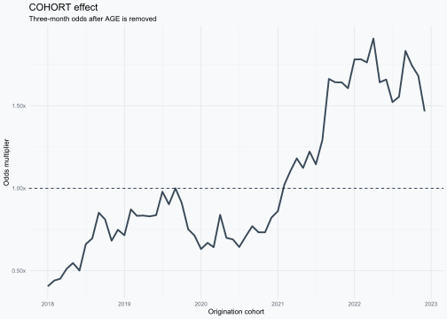
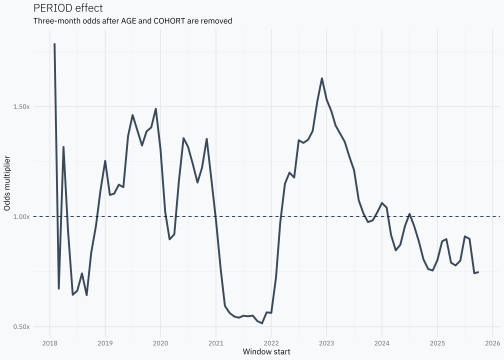
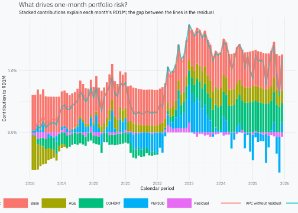

Decomposing credit vintages into age, cohort and period
Reconstruct monthly loan hazards from public Bondora loans and split vintage risk into age, cohort and period effects.
R
credit risk
Author
Joshua Kunst
Published
September 12, 2026
Credit vintages are a common way to follow how default changes after loans are originated. The Federal Reserve describes vintage loss models, also called age-cohort-time models, for retail credit portfolios. The Banco de la República of Colombia uses an age-period-cohort decomposition directly on credit vintages to help understand where changes in credit risk come from.
The idea is simple. Every observation in a vintage has three dates attached to it:
Age: how many months old the loan is.
Cohort: the month when the loan was originated.
Period: the calendar month when we observe it.
For monthly data they are linked exactly:
\[
\text{period} = \text{cohort} + \text{age}.
\]
We will build the data from the bottom up: one loan, its monthly history, all loans, a classic cumulative vintage view, the monthly hazard behind it, the APC decomposition, and finally the one-month portfolio risk reconstructed from those components.
Public loan data
Go & Grow’s public statistics page links a downloadable Bondora loan dataset. The workbook contains one row per loan and a second sheet with a data dictionary.
For this example we use Estonia. The source workbook is large, so the preparation code is folded below: it selects only the six fields needed for the post, keeps Estonian loans and stores a local RDS beside the post. If the RDS is already there, renders read it directly.
Printing the tibble is intentional: it shows the number of rows and columns, the fields we loaded and a few real observations before we transform anything.
The workbook also explains the fields we use. In particular, months_on_book is the number of months a loan has been in active status.
Boolean. Flag indicating if the loan is in default.
loan_id
Unique identifier of the loan.
loan_issued_at
Time when loan was issued.
loan_status
Shows the status of the loan on the given date.
months_on_book
Months a loan has been in active status.
For this example we keep Estonian cohorts from 2018 through 2022 and follow at most the first 36 months. Starting before 2020 is useful because the same calendar period can meet different cohorts at very different ages.
cohort_from<-as.Date("2018-01-01")cohort_to<-as.Date("2022-12-01")max_age<-36Lloans<-loans_raw|>mutate(# Excel stores this field as a serial date in the current workbook. loan_date =as.Date(loan_issued_at, origin ="1899-12-30"), cohort =floor_date(loan_date, unit ="month"), months_on_book =as.integer(months_on_book), is_default =as.logical(is_default),# Use Bondora's MOB convention directly: a defaulted loan defaults at this age. default_age =if_else(is_default, months_on_book, NA_integer_), observed_age =pmin(months_on_book, max_age))|>filter(cohort>=cohort_from,cohort<=cohort_to,observed_age>=1)|>select(loan_id,country,loan_status,cohort,months_on_book,is_default,default_age,observed_age)glimpse(loans)
At this point there is still one row per loan. We know its cohort, how many months we observe it, and whether default happened at the end of that observed path.
uncount() turns that one record into one row per observed month. Age 1 is the first month after origination. The default flag is one only in the month when the default first appears.
Before separating AGE, COHORT and PERIOD, pool every loan that reached the same calendar month. The denominator is the loans alive at the start of the month and the numerator is the defaults that occur during it.
\[
RD_{1M,p} =
\frac{\text{defaults during period }p}
{\text{loans alive at the start of period }p}.
\]
In many portfolio tables, surviving loans are observed as a month-end snapshot. With that convention, defaults during period \(p\) would normally be divided by the survivors at the end of \(p-1\). Here no explicit lag is needed because loan_months is already constructed as the risk set for the interval: a loan contributes a row in period \(p\) if it is alive at the start of that month, remains in the denominator if it defaults during \(p\), and disappears only after that default.
ggplot(portfolio_rd_1m, aes(period, rd_1m))+geom_line()+geom_point()+scale_x_date(date_breaks ="1 year", date_labels ="%Y")+scale_y_continuous(labels =scales::label_percent(accuracy =0.1))+labs( title ="One-month portfolio default risk", subtitle ="All loans at risk within the first 36 months after origination", x ="Calendar period", y ="RD1M")

This is the portfolio-level version of the monthly hazard: among loans that reach a month alive, what fraction default during that month? It tells us when risk moves, but not whether the movement comes from the age mix, the quality of the origination cohorts or a common calendar-period effect. The APC decomposition will separate those pieces and then return to this same RD1M series.
Because the post follows loans only through age 36, this curve describes that same analysis portfolio; loans older than 36 months are outside both this line and the APC decomposition.
From monthly records to vintage hazards
Now group those rows by cohort, age and period. For each combination we count how many loans reached the month and how many new defaults happened there.
surviving_loans is the number of loans still present in the risk set at that age. It is a loan count, not a monetary exposure or EAD.
For each row:
\[
\text{monthly hazard} =
\frac{\text{new defaults during the month}}
{\text{surviving loans in that month}}.
\]
The hazard answers a local question: among loans that reached this age without defaulting before, how many default now? In monthly discrete time this is also a one-month forward default risk, or RD1M, conditional on the loan being alive at the start of the interval.
The classic vintage view
The more familiar credit-risk vintage is cumulative. For each cohort and age we accumulate the defaults and divide by the number of loans at the start of that cohort.
\[
\text{cumulative default rate}_{c,a} =
\frac{\text{defaults accumulated through age } a}
{\text{initial loans in cohort } c}.
\]
The cumulative view answers how much of the original cohort has defaulted so far. The monthly hazard answers a different question: where did new defaults occur? That distinction matters because the APC decomposition below works with the monthly hazard, not with the cumulative rate.
We can display the same twelve cohorts as a monthly-hazard triangle.
A calendar period cuts diagonally across either triangle because different cohorts reach the same period at different ages. For example, look at April 2020 directly in the long table:
It is the same period, but the 2018 loans are much older than the 2019 loans, and the early-2020 loans are only a few months old. A raw vintage view cannot tell us whether a difference comes from age, cohort or the common calendar period.
That is why including pre-2020 cohorts is useful here. If the PERIOD component later changes around 2020, it is a pattern worth inspecting. The decomposition by itself does not prove that COVID caused the change.
Cumulative default by cohort
First, pool monthly cohorts into origination years for a clean overview. This is a descriptive chart only; the APC decomposition still uses monthly cohorts.
annual_vintages<-loan_months|>mutate(cohort_year =year(cohort))|>summarise( surviving_loans =n(), defaults =sum(default), .by =c(cohort_year, age))|>arrange(cohort_year, age)|>mutate( initial_loans =first(surviving_loans), cumulative_defaults =cumsum(defaults), cumulative_default_rate =cumulative_defaults/initial_loans, .by =cohort_year)p_vintages<-annual_vintages|>mutate(cohort_year =factor(cohort_year))|>ggplot(aes(age, cumulative_default_rate, colour =cohort_year, group =cohort_year))+geom_line(linewidth =1)+geom_point(size =1.5)+scale_colour_viridis_d(begin =0.15, end =0.85)+scale_y_continuous(labels =scales::label_percent(accuracy =1))+labs( title ="Cumulative default by vintage", subtitle ="Estonian loans originated from 2018 to 2022", x ="Age (months)", y ="Cumulative default rate", colour ="Cohort year")p_vintages

The yearly view can hide differences among monthly cohorts. Faceting by origination year lets us inspect all twelve monthly vintages inside each year.
monthly_vintages<-vintage_cumulative|>mutate( cohort_year =year(cohort), cohort_month =month(cohort, label =TRUE, abbr =TRUE))monthly_vintages|>ggplot(aes(age, cumulative_default_rate, colour =cohort_month, group =cohort))+geom_line()+facet_wrap(vars(cohort_year))+scale_colour_viridis_d(begin =0.15, end =0.85)+scale_y_continuous(labels =scales::label_percent(accuracy =1))+labs( title ="Monthly vintages within each year", subtitle ="Each line is an origination month", x ="Age (months)", y ="Cumulative default rate", colour ="Month")

Different lines can have different shapes because loans were originated in different months, reached each age in different calendar periods and passed through common events at different points in their life. That mixture is exactly what we want to separate.
Raw age profile
Before decomposing anything, ignore cohort and period and group only by age.
ggplot(age_hazard, aes(age, hazard))+geom_line()+geom_point()+scale_y_continuous(labels =scales::label_percent(accuracy =0.1))+labs( title ="Default hazard by loan age", subtitle ="Raw age profile before separating cohort and period", x ="Age (months)", y ="Monthly default hazard")

This curve is useful, but it still mixes the three parts. Age 12 for a 2018 cohort happened in a different period from age 12 for a 2020 cohort.
Sequential APC decomposition
We now return to vintage_long. Some cohort-age-period rows have no defaults. Their raw hazard is exactly zero, and logit(0) is not finite. We therefore use a small add-half correction: add half a default and half a non-default to every cell.
The numerator increases by 0.5; the denominator increases by 1 because the correction adds 0.5 to each of the two outcomes. In large cells the change is tiny; its purpose is simply to keep the logit finite.
A probability is bounded between zero and one, so additive effects are awkward on that scale. We therefore transform the adjusted hazard q to log-odds:
\[
y = \operatorname{logit}(q) = \log\left(\frac{q}{1-q}\right).
\]
After combining the effects, plogis() takes us back to a default probability:
Read that from left to right. Start with the overall mean mu. AGE explains a systematic deviation from that mean. COHORT then explains part of what remains after AGE. PERIOD finally explains part of what remains after both AGE and COHORT. The last term is the cell-level residual left unexplained.
Start from the mean
Create the adjusted hazard, move it to logit space and attach the same weighted portfolio mean to every row.
apc_decomposition<-vintage_long|>mutate( q =(defaults+0.5)/(surviving_loans+1), y_logit =qlogis(q), mu =weighted.mean(y_logit, surviving_loans), residual_after_mean =y_logit-mu)
AGE: explain the first residual
For each loan age, take the surviving-loan-weighted average of the residual left after the mean.
Finally, group the remaining residual by calendar period. This captures common calendar-time movements after the AGE and COHORT contributions have already been removed.
At this point the decomposition itself is finished: mean, AGE, COHORT, PERIOD and the final residual are all explicit columns.
Reconstruct the fitted hazard
Now combine the three effects, return from log-odds to a probability and verify that adding the final residual reconstructs the adjusted observed rate.
The columns now tell the story of the algorithm from left to right: observed cell, adjusted rate, logit, overall mean, residual after the mean, AGE contribution, residual after AGE, COHORT contribution, residual after COHORT, PERIOD contribution and final residual.
# A tibble: 1 × 1
max_rate_difference
<dbl>
1 2.78e-17
That difference should be zero apart from numerical precision.
Reading the three effects
The decomposition is additive in log-odds. Exponentiating one effect turns it into an odds multiplier: 1x means no change, 1.5x means 50% higher odds and 0.5x means half the odds. These are relative effects, not three separate default rates.
apc_decomposition|>distinct(age, age_effect)|>ggplot(aes(age, exp(age_effect)))+geom_hline(yintercept =1, linetype ="dashed")+geom_line()+geom_point()+scale_y_continuous(labels =scales::label_number(accuracy =0.01, suffix ="x"))+labs( title ="AGE effect", subtitle ="1x means average odds; above 1x means higher odds", x ="Age (months)", y ="Odds multiplier")

apc_decomposition|>distinct(cohort, cohort_effect)|>ggplot(aes(cohort, exp(cohort_effect)))+geom_hline(yintercept =1, linetype ="dashed")+geom_line()+geom_point()+scale_x_date(date_breaks ="1 year", date_labels ="%Y")+scale_y_continuous(labels =scales::label_number(accuracy =0.01, suffix ="x"))+labs( title ="COHORT effect", subtitle ="Relative odds after AGE is removed", x ="Origination cohort", y ="Odds multiplier")

apc_decomposition|>distinct(period, period_effect)|>ggplot(aes(period, exp(period_effect)))+geom_hline(yintercept =1, linetype ="dashed")+geom_vline(xintercept =as.Date("2020-03-01"), linetype ="dotted")+geom_line()+geom_point()+scale_x_date(date_breaks ="1 year", date_labels ="%Y")+scale_y_continuous(labels =scales::label_number(accuracy =0.01, suffix ="x"))+labs( title ="PERIOD effect", subtitle ="Relative odds after AGE and COHORT are removed", x ="Calendar period", y ="Odds multiplier")

A peak in AGE means higher odds at those ages. A peak in COHORT means higher odds for those origination months after AGE is removed. A peak in PERIOD means higher odds in those calendar months after AGE and COHORT are removed.
Back to the portfolio RD1M
The APC was estimated in log-odds, but we do not need to fit anything again to express the same components in default-risk units. Apply plogis() after each sequential step and define each contribution as the change from the previous step.
apc_decomposition<-apc_decomposition|>mutate( risk_base =plogis(mu), risk_after_age =plogis(mu+age_effect), risk_after_cohort =plogis(mu+age_effect+cohort_effect), risk_after_period =fitted_hazard, contribution_age =risk_after_age-risk_base, contribution_cohort =risk_after_cohort-risk_after_age, contribution_period =risk_after_period-risk_after_cohort,# Keep the raw-hazard difference as the final display residual on the risk scale. contribution_residual =hazard-risk_after_period)
The first four terms therefore reconstruct the APC fitted hazard. Adding the final risk-scale residual reaches the raw monthly hazard observed in each cell. This last display residual is deliberately on the probability scale; it is not the same object as residual_after_period, which lives in log-odds.
Now pool those contributions across every cohort and age present in each calendar month, using the same number of surviving loans as weights.
The portfolio series at the beginning of the post came directly from individual loan-month rows. The reconstructed series came through the vintage table, the APC decomposition and the change back from log-odds to probability. They should still meet exactly because both use the same defaults and the same loans at risk.
# A tibble: 1 × 1
max_rd_1m_difference
<dbl>
1 3.47e-18
The difference should be zero apart from numerical precision.
The same result can now be read as a decomposition of portfolio risk. Each bar is one calendar month. Base, AGE, COHORT, PERIOD and Residual are already in RD1M units, so positive components add risk and negative components subtract it, much like additive feature contributions. The net sum of the bar components is the observed RD1M.
portfolio_components<-portfolio_apc|>select(period, Base =base, AGE =age_component, COHORT =cohort_component, PERIOD =period_component, Residual =residual_component)|>pivot_longer( cols =-period, names_to ="component", values_to ="contribution")|>mutate( component =factor(component, levels =c("Base", "AGE", "COHORT", "PERIOD", "Residual")))ggplot()+geom_col( data =portfolio_components,aes(period, contribution, fill =component), width =25)+geom_line( data =portfolio_apc,aes(period, observed_rd_1m, colour ="Observed RD1M"), linewidth =0.9, alpha =0.75)+geom_line( data =portfolio_apc,aes(period, fitted_rd_1m, colour ="APC without residual"), linewidth =0.9, alpha =0.75)+scale_x_date(date_breaks ="1 year", date_labels ="%Y")+scale_y_continuous(labels =scales::label_percent(accuracy =0.1))+labs( title ="What drives one-month portfolio risk?", subtitle ="Stacked contributions explain each month's RD1M; the gap between the lines is the residual", x ="Calendar period", y ="Contribution to RD1M", fill ="Component", colour =NULL)

The observed line is the RD1M calculated directly from the portfolio. The second line stops before the residual, so the distance between both lines shows how much monthly risk remains unexplained by AGE, COHORT and PERIOD. A rise in RD1M can now be read by looking at which component changed: the portfolio may have moved toward riskier ages, become more concentrated in weaker origination cohorts, experienced a common period shock, or simply retained a larger residual.
One important caveat
This post uses a sequential decomposition because it is easy to see step by step. But AGE, COHORT and PERIOD are linked by period = cohort + age, so there is no unique way to separate all three without making an additional choice. Here the choice is the order: AGE first, then COHORT, then PERIOD.
That is why these plots should be read as one transparent way of dividing the observed vintage risk, not as the only possible decomposition. A later comparison can use a simultaneous APC method and check whether the same risky ages, cohorts and periods appear.
Why do the effects average to zero?
There is no extra centering step in the code. The zero weighted means appear by construction. The portfolio mean mu makes residual_after_mean have weighted mean zero. AGE is then the weighted group mean of that zero-mean residual, so its weighted mean is also zero. Subtracting AGE leaves another zero-mean residual, and the same argument repeats for COHORT and then PERIOD.
This relies on using the same rows and the same surviving_loans weights at every step. We can check the property directly:
# A tibble: 1 × 3
age cohort period
<dbl> <dbl> <dbl>
1 1.49e-16 -1.48e-17 -1.12e-18
The three values should be zero apart from numerical precision.
Logit or complementary log-log?
This post uses a logit link. That follows the lending APC formulation in Breeden (2024), where Section 3, Equation (1) on page 3 of the PDF writes the default model as logit(PD) = F(a) + G(v) + H(t) + epsilon.
Logit is not the only valid link. A common alternative in discrete-time survival analysis is the complementary log-log link:
The complementary log-log link connects grouped time intervals naturally to a continuous-time proportional-hazards interpretation. Under that link, exp(effect) is read as a hazard multiplier rather than an odds multiplier. For small monthly default rates, logit and complementary log-log are numerically close, so the practical difference is often modest. Here we keep logit because it matches the lending APC formulation above and keeps the effects directly interpretable in odds.
A note on monetary weights
Here surviving_loans is a count, so each surviving loan contributes equally to the decomposition. In production credit-risk applications, results are often weighted by amount, exposure or balance because a few large defaults may matter more economically than many small ones. Bondora provides the original loan amount, so an amount-weighted version would be a natural extension. A true balance-weighted history would require monthly historical balances rather than the current snapshot balance.
References
Federal Reserve Board (2013), Capital Planning at Large Bank Holding Companies: vintage loss models, also called age-cohort-time models, for retail credit portfolios.
Banco de la República (2024), Decomposition of the Performance of Credit Vintages: an age-period-cohort application to credit vintages in its Financial Stability Report.
Breeden, J. L. (2024), An Age–Period–Cohort Framework for Profit and Profit Volatility Modeling, Mathematics 12(10), 1427; Section 3, Equation (1).